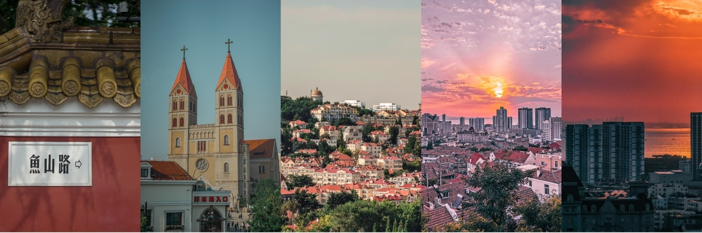
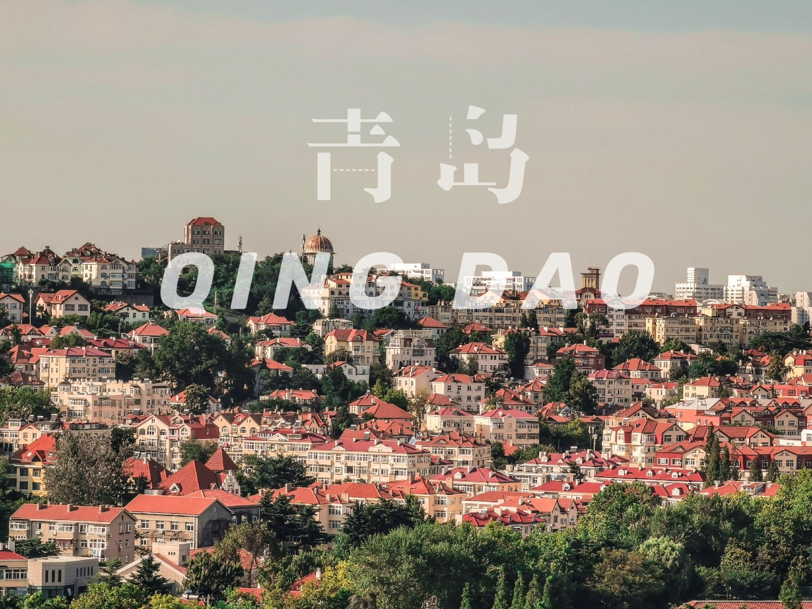
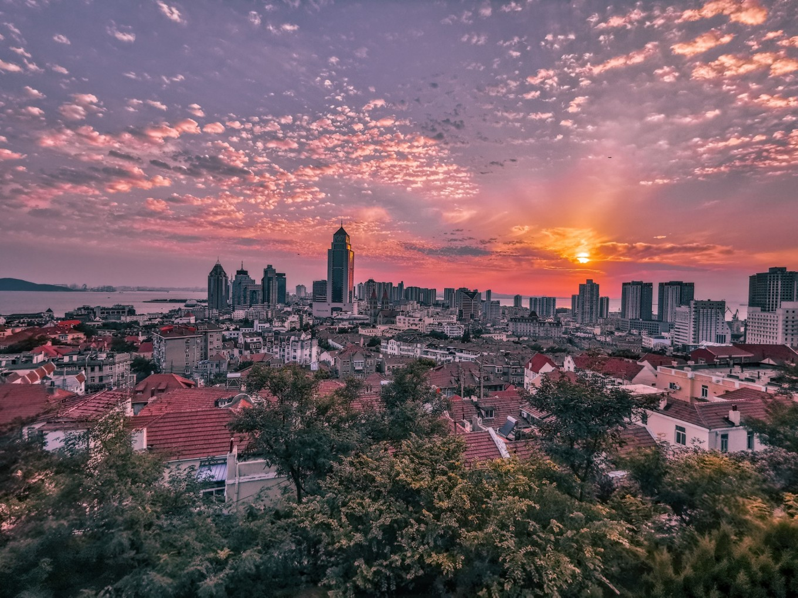

满满的回忆
青岛
百度来源
对于想做的事儿，我总能找到合理的理由去达成，对于不想做的事儿，我也总能找到一个合理的借口。
旅行也是如此。很多人经常把旅行当做是一种自我逃避，但我不一样“我不是想去旅行，我只是不想工作而已”。
没错我又不想上班了，又想出去玩了🌝
请假一天，连着周末两天，三天打卡一个城市，这是我经常的状态， 青岛 最吸引我的是那些个红房子，当然还有那个袋装的啤酒🍺。
很小的时候来过一次 青岛 ，已经没有印象了，但沈从文的一段话却始终记着：
“我一个人到 青岛 那个高处的教堂门前，坐在石阶上看云，看海，看教堂石墙上挂的薜萝。耳听到附近一个什么人家一阵钢琴的声音。 那曲 子或许只是一个初学琴的女孩子那样“。
记得这句话不是因为我有多喜欢读书，只是因为上学的时候寒暑假都要被逼着看名人名著，开学还要交读书笔记。
所以去 青岛 吧，那里有海，有酒。
有关于青岛
青岛 ，在黄海之上， 胶州 半岛东部，是 中国 最有 欧洲 范儿的城市，也是最爱喝啤酒的城市，这个城市给我的感觉甚至比 法国 还要浪漫。

贵妇青岛
如果说要用一种人来形容 青岛 ，那么贵妇这个词在贴切不过了， 青岛 给我的感觉就是贵妇的气质，当然不是黄渤这个 青岛 贵妇。
青岛 的老城区因为历史的原因，有很多德式和欧式风格的建筑，红瓦、绿树、碧海、蓝天是对 青岛 最好的诠释。
德式和欧式风格的建筑，让整个城市都洋溢着小资而又浪漫的气息，如果说80年代的 青岛 是一个贵族小姐的话，那现在用贵妇来描述 青岛 更为妥当，历史的发展，城市的建设，让整座城市变得成熟迷人，当你走在老城区，路边的老洋房，晒被子的阿姨，下棋的爷爷，还有坐在路边小馆子里，敞开膀子喝酒的大汉，都让这座城市变得鲜活生动。
青岛的那些红房子
青岛 的红房子大多都是以前的德式建筑，对于当时来说的确是洋气得很，放到现在也仍然符合大家的审美，这座靠海的城市，蓝天、碧海、白云、红瓦、绿树足以满足你对滨海小城的幻想。 而我最喜欢的则是这座城市的红房子。

来 青岛 一趟，你可能会被偷走腹肌，但是 青岛 会还给你一个啤酒肚的。 这，很公平。
有时间的话，就来 青岛 吧，你值得来一趟，你得来一趟。